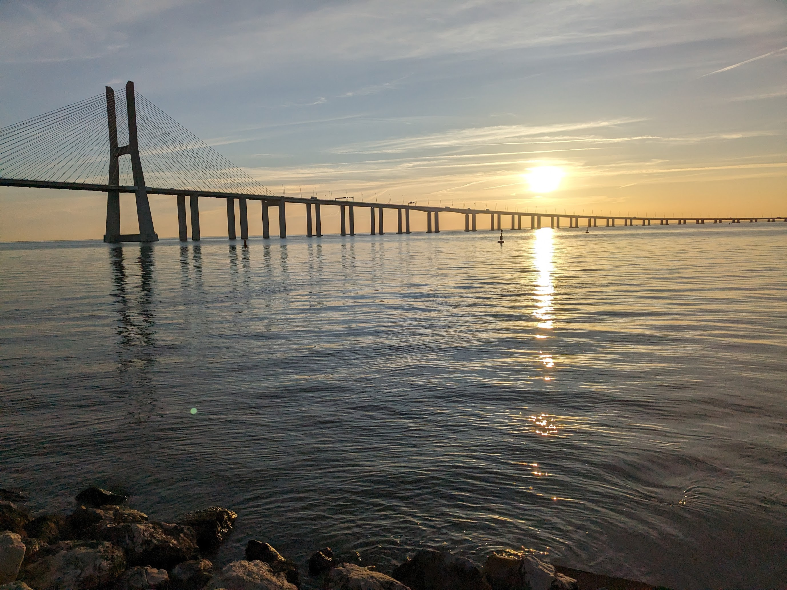
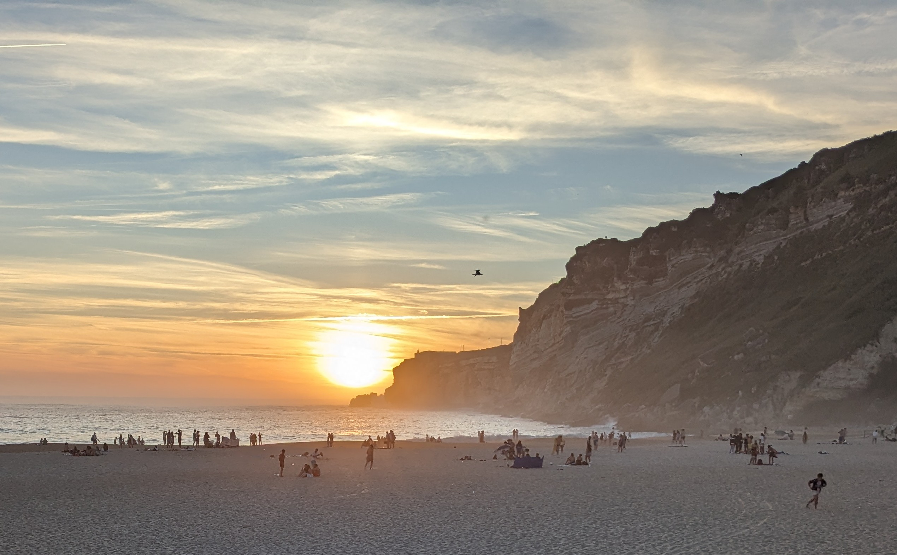
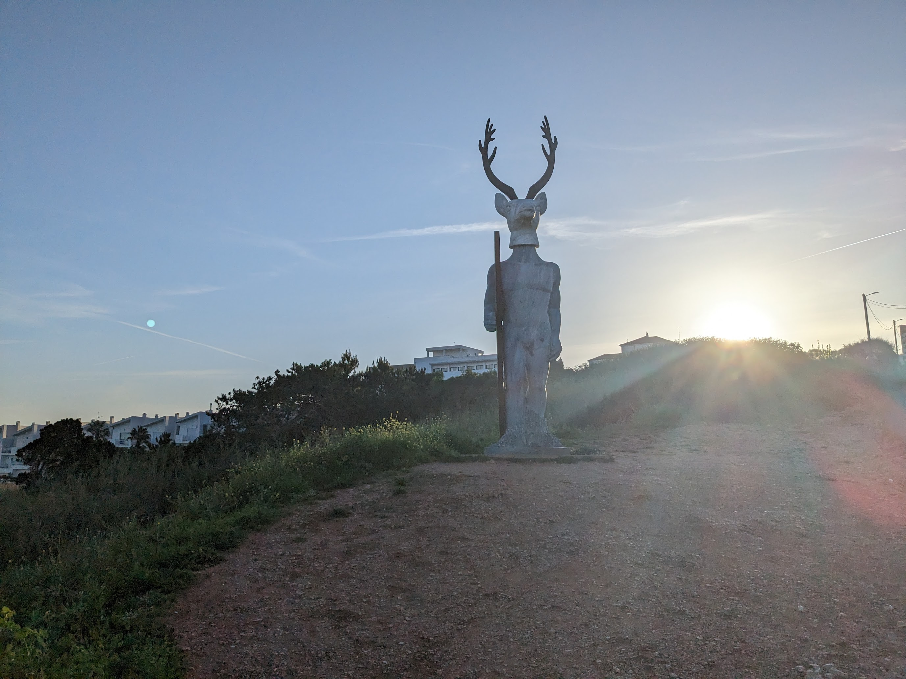
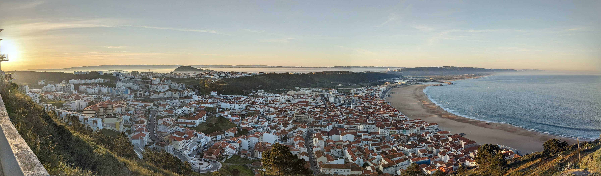
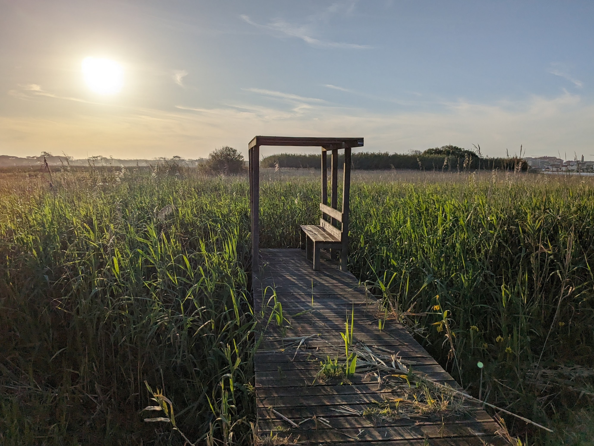
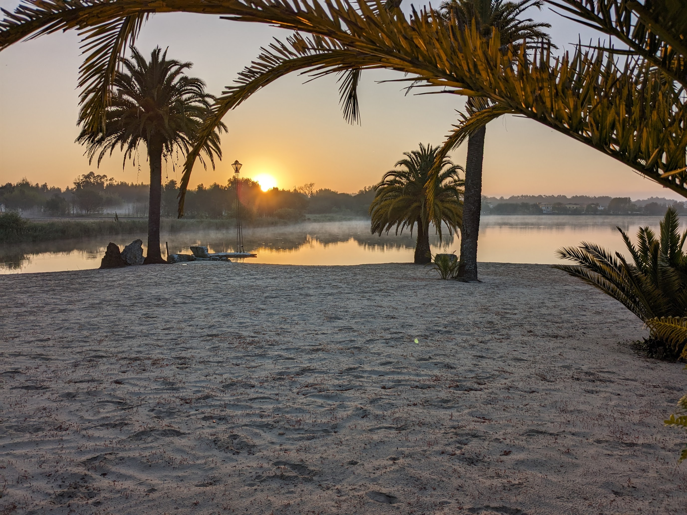
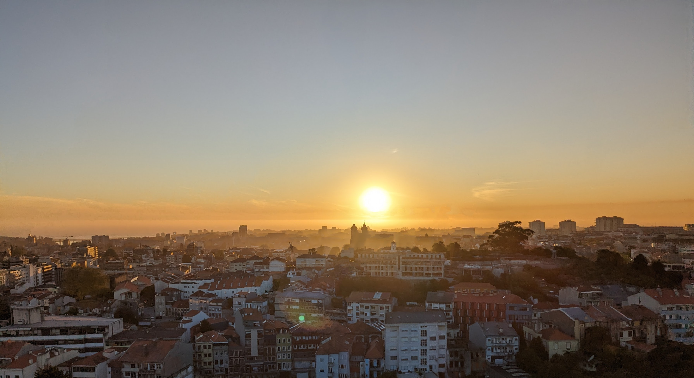

Portugal – April 2024
(🚲 580km, 4900m elevation)

Ponte Vasco da Gama

Nazare Beach

Nazare Surfing Statue

Nazare Sunrise at cliff

Bench at Mira-Beach Lake

Quinta da Lagoa

Porto skyline at sunset
Back